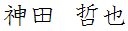

KANDA, Tetsuya

Ph.D. in Information Science and Technology
Assistant Professor
at
Software Engineering Laboratory,
Department of Computer Science,
Graduate School of Information Science and Technology,
Osaka University
t-kanda@ist (+ .osaka-u.ac.jp)
kanda (+ @computer.org)
old: t-kanda@is (+ .naist.jp)
Academic Position
- φ(._.;) and now
- 2018.04 - current: Assistant Professor: Software Engineering Laboratory, Graduate School of Information Science and Technology, Osaka University, Japan
- 2017.04 - 2018.03: Specially Appointed Assistant Professor: Education Network for Practical Information Technologies：enPiT, Graduate School of Information Science and Technology, Osaka University, Japan
- 2016.04 - 2017.03: Postdoctoral Fellow: Software Engineering Laboratory, Graduate School of Information Science, Nara Institute of Science and Technology, Japan
Education
- φ(._.;)
- 2016.03: received Ph.D. in Information Science and Technology, Graduate School of Information Science and Technology, Osaka University (supervisor: Prof. Katsuro Inoue).
- 2013.03: received Master of Information Science and Technology, Graduate School of Information Science and Technology, Osaka University.
- 2011.03: received B.E., School of Engineering Science, Osaka University.
- 2007.03: graduated Hyogo Prefectural Nagata High School.
- O0o.(_ _ ) ...Zzz...
Lecture
Research
Google Scholar, ResearchGate, dblp
Research Interests
Software similarity, Software Product Line, Software evolution, Software reuse, Source code analysis
Publications (in English)
Journal Papers
- Yuhao Wu, Yuki Manabe, Tetsuya Kanda, Daniel M. German, Katsuro Inoue: "Analysis of License Inconsistency in Large Collections of Open Source Projects ", Empirical Software Engineering Journal (EMSE), Springer [to appear] [more]
- Tetsuya Kanda, Takashi Ishio, Katsuro Inoue: "Approximating the Evolution History of Software from Source Code", IEICE TRANSACTIONS on Information and Systems, Vol.E98-D, No.6, pp.1185-1193, June 2015 [more]
- Tetsuya Kanda, Yuki Manabe, Takashi Ishio, Makoto Matsushita, Katsuro Inoue: "Semi-Automatically Extracting Features from Source Code of Android Applications", IEICE TRANSACTIONS on Information and Systems, Vol.E96-D, No.12, pp.2857-2859, December 2013 [more]
Conference and Workshop Papers
- Tetsuya Kanda, Mingyu Guo, Hideaki Hata, Kenichi Matsumoto: "Towards Understanding an Open-Source Bounty: Analysis of Bountysource", Proceedings of the 24th IEEE International Conference on Software Analysis, Evolution, and Reengineering (SANER 2017) Poster session, pp.577-578, Klagenfurt, Austria, February 2017 [more]
- Takashi Ishio, Raula Gaikovina Kula, Tetsuya Kanda, Daniel M. German, Katsuro Inoue: "Software Ingredients: Detection of Third-party Component Reuse in Java Software Release", Proceedings of the 13th Working Conference on Mining Software Repositories (MSR 2016), pp.339-350, Austin, Texas, May 2016 [more]
- Yusuke Sakaguchi, Takashi Ishio, Tetsuya Kanda, Katsuro Inoue: "Extracting a Unified Directory Tree to Compare Similar Software Products", Proceedings of the 3rd IEEE Working Conference on Software Visualization (VISSOFT 2015), pp.165-169, Bremen, Germany, September 2015 [more]
- Yasuhiro Hayase, Tetsuya Kanda, Takashi Ishio: "Estimating Product Evolution Graph using Kolmogorov Complexity", Proceedings of the 14th International Workshop on Principles of Software Evolution (IWPSE 2015), pp.66-72, Bergamo, Italy, August 2015 [more]
- Yuhao Wu, Yuki Manabe, Tetsuya Kanda, Daniel M. German, Katsuro Inoue: "A Method to Detect License Inconsistencies in Large-Scale Open Source Projects", Proceedings of the 12th Working Conference on Mining Software Repositories (MSR 2015), pp.324-333, Florence, Italy, May 2015 [more]
- Naohiro Kawamitsu, Takashi Ishio, Tetsuya Kanda, Raula Gaikovina Kula, Coen De Roover, Katsuro Inoue: "Identifying Source Code Reuse across Repositories using LCS-based Source Code Similarity", Proceedings of the 14th International Working Conference on Source Code Analysis and Manipulation (SCAM 2014), pp.305-314, Victoria, Canada, September 2014 [more]
- Tetsuya Kanda, Daniel M. German, Takashi Ishio, Katsuro Inoue: "Measuring Copying of Java Archives", Proceedings of the 8th International Workshop on Software Clones (IWSC 2014), Antwerp, Belgium, February 2014 [more]
- Tetsuya Kanda, Takashi Ishio, Katsuro Inoue: "Extraction of Product Evolution Tree from Source Code of Product Variants", Proceedings of the 17th International Software Product Line Conference (SPLC 2013), pp.141-150, Tokyo, Japan, August 2013 [more]
Technical Reports
- Liu Shuchang, Takashi Ishio, Tetsuya Kanda, Katsuro Inoue: "Extraction of Evolution History from Software Source Code Using Linear Counting", IPSJ SIG Technical Report, Vol.2018-SE-198, No.15, pp.1-8, Tokyo, March 2018 [more]
- Tetsuya Kanda, Yuki Manabe, Takashi Ishio, Makoto Matsushita, Katsuro Inoue: "A Prototype of Comparison Tool for Android Applications Based on Difference of API Calling Sequences", Japan-Korea Joint Workshop of Software Science and Engineering, IEICE Technical Report, vol.111, no.107, SS2011-10, pp.35-40, Seoul, South Korea, July 2011 [more]
Publications (in Japanese)
Journal Paper
- Tetsuya Kanda, Daniel M. German, Takashi Ishio, Katsuro Inoue: "Comparing Frequency of Identifier Definition in C and Java APIs", IEICE TRANSACTIONS on Information and Systems (Japanese Edition), Vol.J99-D, No.4, pp.461–462, April 2016 [more]
Conference and Workshop Paper
- Yasuhiro Hayase, Tetsuya Kanda, Takashi Ishio: "Product Evolution Estimation Based on Kolmogorov Complexity", FOSE2014, Kagoshima, December 2014 [more][English abst]
Technical Reports
- Tetsuya Kanda, Naoki Fukuyasu, Sachio Saiki, Kohei Ichikawa, Masahide Nakamura, Shinji Kusumoto: "Cource Design for Training AI and BigData Experts Using Automatic Ordering Problem", Proceedings of the 34th JSSST Annual Symposium, Kanagawa, September 2018 [more]
- Yusuke Sakaguchi, Takashi Ishio, Tetsuya Kanda, Katsuro Inoue: "A Tool Visualizing a Unified Directory Tree to Compare Similar Software", Proceedings of the 32nd JSSST Annual Symposium, Tokyo, September 2015 [more][English abst]
- Tetsuya Kanda, Takashi Ishio, Katsuro Inoue: "Towards Automatic Extraction of the Derivative Relationships of Source Files", IPSJ SIG Technical Report, Vol.2012-SE-178, No.14, pp.1-8, Hiroshima, November 2012 [more][English abst]
- Tetsuya Kanda, Yuki Manabe, Takashi Ishio, Makoto Matsushita, Katsuro Inoue: "Investigation into Power Law in Software Component Graph of Android Applications", Proceedings of the 73rd National Convention of IPSJ, vol.1, pp.491-492, Tokyo, March 2011 [more]
Thesis
- Ph.D. Thesis : "Study on Analysis of Program Collection for Classifying and Understanding Relations", Osaka University, January 2016 [more]
- Master Thesis: "Construction of Software Derivation Tree for Software Product Family", February 2013 [more][English abst]
- Bachelor Thesis: "A Tool for Comparing Android Applications Using Difference of API Calling Sequences", February 2011 [more][English abst]
Visits
- 2016.08 - 2017.03: Department of Computer Science, College of Science and Engineering, City University of Hong Kong, Hong Kong
- 2016.04 - 2016.08: School of Computer Science, University of Adelaide, Australia
- 2012.02 - 2012.03: Department of Computer Science, University of Victoria, Canada
Academic Service
- Publication Chair: IPSJ/SIGSE Software Engineering Symposium (SES2018)
- Registration Chair: 3rd IEEE/ACIS International Conference on Big Data, Cloud Computing, and Data Science Engineering (BCD 2018)
- Web Co-Chair: the 23rd IEEE International Conference on Software Analysis, Evolution, and Reengineering (SANER 2016)
- Local Arrangement Co-Chair: the 7th International Workshop on Empirical Software Engineering in Practice (IWESEP 2016)
- Student Volunteer: the 6th International Workshop on Empirical Software Engineering in Practice (IWESEP 2014)
Affiliated Academic Societies
IPSJ, IEEE CS
Others
Job Internship
- 2012.07 - 2012.08: Hitachi, Ltd.
TA , RA
- 2013.04 - 2016.03: RA: Graduate School of Information Science and Technology, Osaka University, Japan
- 2015.10 - 2016.03: TA: Software development (IST, Osaka Univ.)
- 2012.04 - 2012.07: TA: Information science experiment B (ES, Osaka Univ.)
- 2011.04 - 2011.09: TA: Program design (ES, Osaka Univ.)
Special Program
- 2011: IT Specialist Program Initiative for Reality-based Advanced Learning (IT Spiral)
Activities
my Executable works (at Osaka Univ.)
Android applications
Tools
- Software derivation analysis and visualization tools based on source code analysis
- for Source File (prototype) ViSiDi - VIsualization tool for SImilarity of source code based on DIff (Japanese)
- for Software Products PRET-Extractor - PRoduct Evolution Tree Extractor
Misc
Hobby
Clarinet (wind orchestra)
- Nagata Brass Band (brass band club in Nagata high school) (2004 - 2006)
- I joined their regular concert as a graduated member (2007 - 2015)
- Osaka University Wind Orchestra (2007 - 2009)
- Joined The 15th Band Festival of Asia Pacific Band Director Association (APBDA) as a member of Japan Hanshin University Selection Brass Band(2008)
- Kilauea Wind Orchestra (2010 - 2012)
- Giocoso Raid Wind Orchestra (2011)
- and some other small concert
Electric bass guitar : I belonged to pop'n rock band ;-)